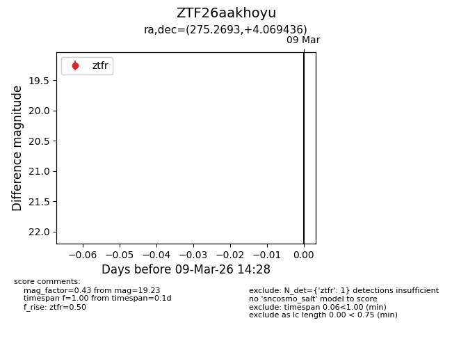
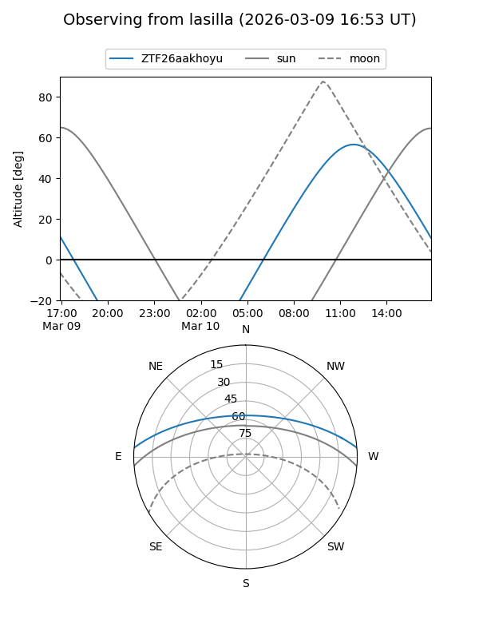
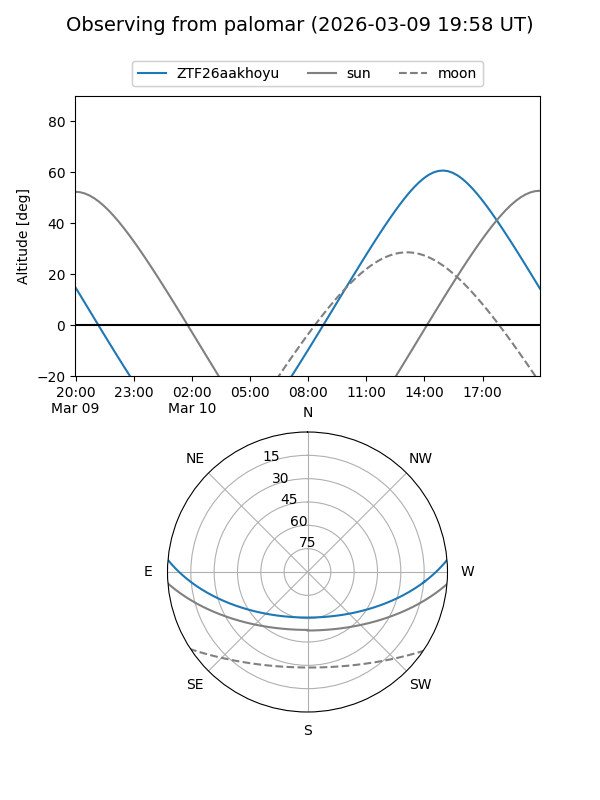

ZTF26aakhoyu
Target ZTF26aakhoyu at 2026-03-09 14:29
Aliases and brokers:
FINK: link
Lasair: link
ALeRCE: link
alt names
ZTF26aakhoyu (ztf,fink_ztf)
Coordinates:
equatorial (ra, dec) = 275.2693,+4.06944
equatorial (HMS+DMS) = 18:21:04.62,+04:04:09.97
galactic (l, b) = (33.1104,+8.60482)
Flags:
Photometry:
last ztfr=19.23
1 ztfr detections
Lightcurve

Visibility


Additional plots